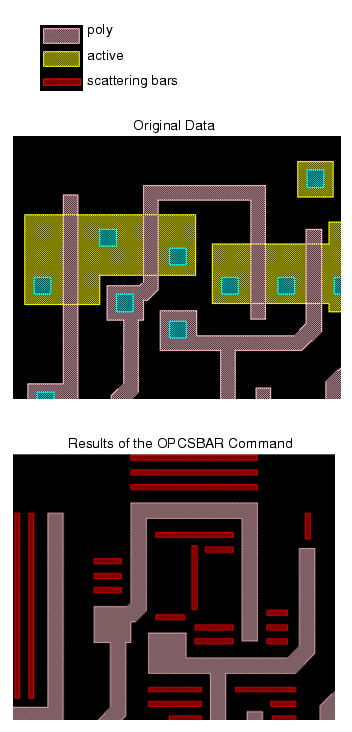
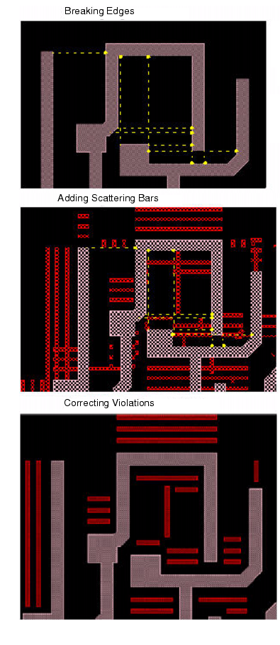

|  | These methods are typically used to write a rule file for scattering bar treatment, and review the results:
|
|  | During classification, OPCSBAR breaks the original edges into groups that meet one specific SPACE constraint. For information regarding edge breaking, refer to the SPACE keyword section entitled Edges. OPCSBAR generates scattering bars according to SBOFFSET, CNETER, and SBWIDTH commands and their parameters as specified in the rules. OPCSBAR then cleans up the initial scattering bars and applies MRC rules to them by trimming or removing them. |